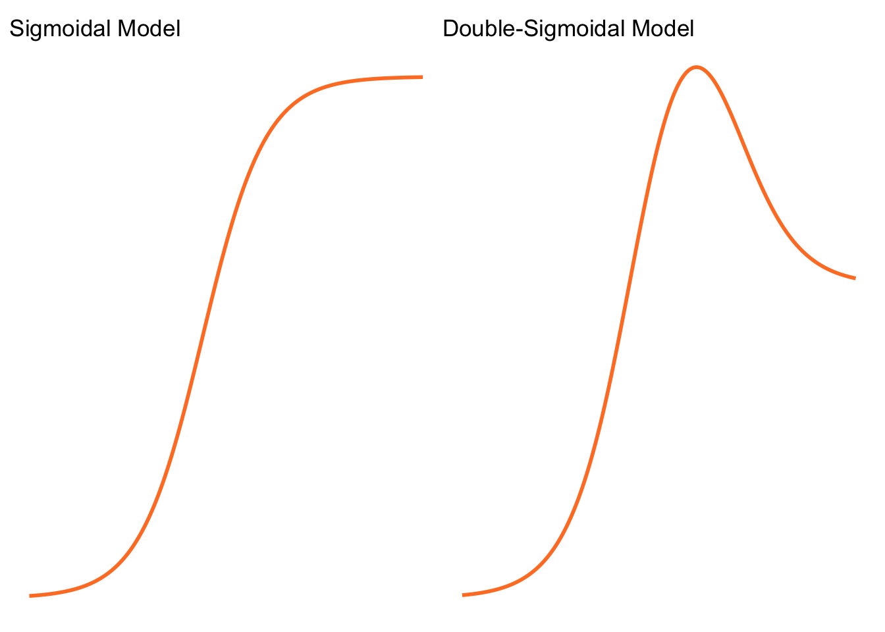

Evaluating the Reliability of Sicegar for Timing Analysis of RpoS-Dependent Gene Expression
A Brief Overview
Brief Context
This body of research is grounded in the study of gene expression timing, particularly in E. coli’s RpoS-dependent stress response. Understanding when a gene turns on (its onset time) is critical for interpreting cellular behaviour under stress.
To study this, Adams et al. (2023) used time-course RNA-seq data to observe gene expression trajectories and analysed them with the R package sicegar, a tool designed to model growth-like curves with sigmoidal or double-sigmoidal shapes. However, while sicegar has been widely used, its reliability in accurately identifying model type and estimating onset times had not been systematically validated. This project addresses that gap by building a simulation-based framework to test how well sicegar performs under controlled, known conditions.
Understanding sicegar
sicegar automatically fits data to both sigmoidal and double-sigmoidal models and chooses the better fit based on maximum likelihood estimation and AIC comparison.
It uses the Levenberg–Marquardt algorithm to minimise squared residuals and normalises data to \([0,1]\) internally.
Its classification is intentionally conservative: when uncertain, it tends to label data as ambiguous rather than forcing a sigmoidal or double-sigmoidal classification.
The models
Sigmoidal model
Represents a single, monotonic increase in intensity until saturation: \[f(x) = h_0 + \frac{h_1-h_0}{1+e^{-a(x-t_1)}}\] where \(t_1\) corresponds to the inflection point and therefore to the onset time.
Double-sigmoidal model
Capture two distinct phases: an initial rise and a subsequent decline: \[f(x) = \frac{1}{h_1}\left(h_0 + \frac{h_1-h_0}{1+e^{-a_1(x-t_1)}}\right)\left(h_2 + \frac{h_1-h_2}{1+e^{a_2(x-t_2)}}\right)\] Here, the relationship between \(t_1\) and the actual onset time is not straightforward - \(t_1\) is not necessarily the true inflection point.
Analytical and Computational Foundations
Before simulations, the project establishes theoretical ground truth for the inflection or onset time:
- For the sigmoidal model, symbolic calculus confirmed that \(t_1\) indeed marks the inflection point.
- For the double sigmoidal model, no closed-form solutions exists (trust me, we tried!). Analytical differentiation yields a highly complex expression. Therefore a numerical approach was developed for our research’s goals. We developed a computational pipeline that defined the true onset time for any onset time for any simulated double sigmoidal curve, providing a benchmark against which to test
sicegar.
Simulation Design
Simulations generate synthetic gene expression data mimicking real experimental patterns with known ground truth.
Steps include:
- Selecting model type (sigmoidal vs double-sigmoidal).
- Choosing biologically realistic parameters.
- Sampling at chosen intervals (we can ask, does sampling more often yield more accurate results?) and adding controlled noise (dispersion) and replicates to resemble experimental uncertainty.
- Feeding the noisy data into
sicegar’sfitAndCategorizefunction.
This approach mirrorss the logic of an experiment where both the “exam” (data) and “mark scheme” (true params) are known, allowing precise assessment of how close sicegar gets to the correct answers.
Brief Overview of Findings
Model identification
Simulations confirmed sicegar’s conservative classification behaviour:
- It rarely misidentified models (sigmoid vs. double-sigmoid).
- Instead, it tended to label uncertain cases as ambiguous, particularly at high noise levels.
- Interestingly, some high-variability sigmoidal data were misclassified as double-sigmoidal, but not vice versa.
Onset Time Estimation - Sigmoidal Models
sicegar performed well under ideal (low-noise) conditions:
- With zero dispersion, onset time detection was perfect (100% accuracy), though perhaps this is unsurprising.
- As dispersion increased, the error increased systematically, typically underestimating onset times.
- When recording time was too short (small x_lim), sicegar sometimes overestimated onset time instead.
- Accuracy depended not just on noise but on how far the true onset was from the last observed timepoint - incomplete curves misled the model.
Onset Time Estimation - Double Sigmoidal Models
For double-sigmoids, the issue was more structural: - The first inflection point often did not coincide with sicegar’s reported \(t_1\). - Therefore, even with clean data, its interpretation of onset time was sometimes inaccurate by definition. - Nonetheless, sicegar’s model fititng was computationally efficient and stable - suggesting reliability in curve shape recognition, if not always in onset quantification.
Bootstrapping Bias Correction
After observing that both sigmoidal and double-sigmoidal models consistently underestimated onset time, we explored ways to quantify and correct this bias. Using the bootstrap method, we estimated the systematic deviation between sicegar’s onset time estimates and the true values. By resampling data and recalculating onset times across many iterations, we obtained an empirical distribution that revealed the average bias in estimation.
Because the data were sampled at discrete time points with limited replicates, a parametric bootstrap was developed. We first fitted a model using `sicegar, extracted its estimated parameters, and then generated new simulated datasets using those parameters. This allowed us to compute bootstrap-based bias estimates and adjust the original onset time accordingly. Across 500 datasets and 100 bootstraps per dataset, this correction systematically shifted the estimates closer to the true onset values.
Although we outlined a similar pipeline for the double-sigmoidal model, it remains computationally intensive to implement at scale due to nested simulations and the added complexity of identifying the correct inflection point.
Curious About Where It Went Next?
The work presented in this paper is a small part of a larger research trajectory.
In the summer of 2024, immediately following the termination of our summer research period, Professor Jo Hardin presented our results at the Computational Genomics Summer Institute (CGSI) at UCLA, sharing both the methodological framework and the bootstrap correction we developed.
Throughout the 2024–2025 academic year, Mira Terdiman extended this work for their senior thesis under Hardin’s supervision. Their project focused on diagnosing estimation issues within the sicegar package - particularly those arising from corner cases in the sigmoidal and double-sigmoidal models, biases introduced by the Levenberg–Marquardt algorithm, and the sensitivity of results to hyperparameter choices. Using simulations from known parameter values, they demonstrated that setting data-driven hyperparameters significantly improved the accuracy and reliability of fits, providing practical guidance for future users.
In the summer of 2025, three undergraduate collaborators continued this line of work with Professor Hardin by refining the underlying code and implementing Mira’s suggested changes directly within the package. Their fixes addressed several sources of bias and were formally submitted to the package authors - who integrated them into a new release. The team also co-authored a short software note in the Journal of Open Source Software (JOSS), documenting these technical improvements and ensuring the methods could be reliably applied across diverse biological datasets.